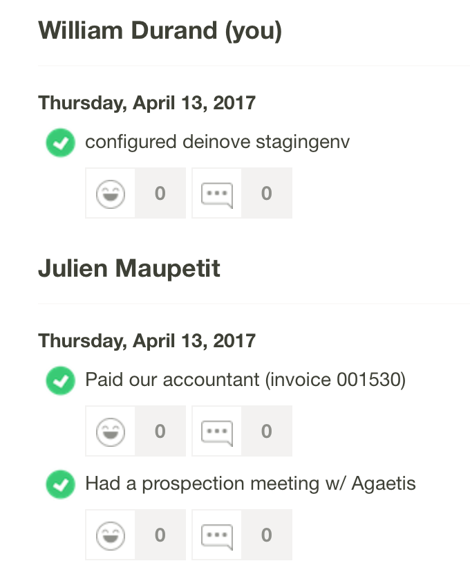
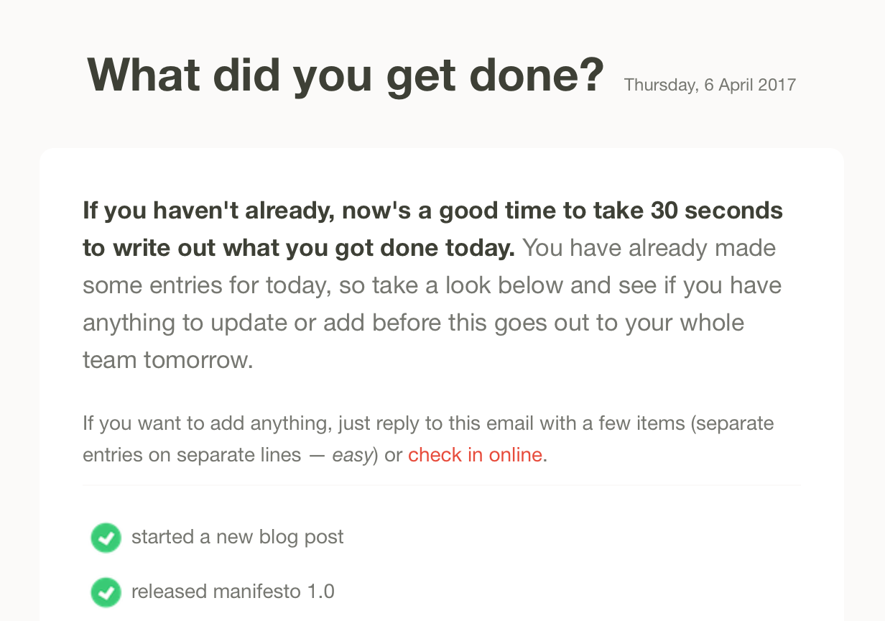

<!doctype html>
<html>
	<head>
		<meta charset="utf-8">
		<meta name="viewport" content="width=device-width, initial-scale=1.0, maximum-scale=1.0, user-scalable=no">

		<title>Remote-First? – William Durand, TailorDev</title>

		<link rel="stylesheet" href="css/reveal.css">
		<link rel="stylesheet" href="css/theme/tailordev.css">

		<!-- Theme used for syntax highlighting of code -->
		<link rel="stylesheet" href="lib/css/zenburn.css">

        <style>
            .left-list ul {
                display: inherit!important;
            }
        </style>

		<!-- Printing and PDF exports -->
		<script>
			var link = document.createElement( 'link' );
			link.rel = 'stylesheet';
			link.type = 'text/css';
			link.href = window.location.search.match( /print-pdf/gi ) ? 'css/print/pdf.css' : 'css/print/paper.css';
			document.getElementsByTagName( 'head' )[0].appendChild( link );
		</script>
	</head>
	<body>
		<div class="reveal">
			<div class="slides">
			    <section data-markdown>
			        <script type="text/template">
			            # Remote-First?

                        _William Durand – MiXiT 2017_
                    </script>
			    </section>
			    <section>
			        <section data-markdown>
			            <script type="text/template">
                            ## Remote<br>(Friendly | First | Only)
                            ## 🤔
			            </script>
			        </section>
			        <section data-markdown>
			            <script type="text/template">
                            ### Remote Friendly

                            > Just because you happen to use chat rooms doesn’t mean
                            > you’ve suddenly become a glorious haven for remote
                            > workers, dammit.
                            >
                            > _Zach Holman (ex-GitHub) in 2015_

                            - Remote work is "allowed" (typically time boxed)
                            - No access to all resources 😢
                            - Meetings 😭
                        </script>
			        </section>
			        <section data-markdown>
			            <script type="text/template">
                            ### Remote First

                            > Working **remote is the default**. It means making sure
                            > your remote employees are as much a part of the team as
                            > those in the office.
                            >
                            > _Alyssa Mazzina (StackOverflow) in 2017_

                            - Everything is done to make it work
                            - It is a **mindset**, not a place<sup>[1]</sup>
                            - Great tools and processes 💪

                            [1]: https://thinkgrowth.org/the-difference-between-remote-and-remote-first-7dd38458855f
			            </script>
			        </section>
			        <section data-markdown>
			            <script type="text/template">
                            ### Remote Only

                            Remote First without any physical offices/HQs.
			            </script>
			        </section>
			        <section data-markdown>
			            <script type="text/template">
                            ### Distributed Teams

                            You have a distributed team when you start dealing with **different time zones**.
                            🕐 🕗 🕢

                            
			            </script>
			        </section>
                    <section data-markdown>
                        <script type="text/template">
                            ### Inspirations 💕

                            * Zapier: 20 employees (likely more now)
                            * Litmus: 70 employees (2016)
                            * Buffer: 80 employees (2016)
                            * GitLab: 140 employees (2017)
                            * Automattic: 548 employees in 53 countries speaking 76 different languages (2017)

                            <br>
                            And many others on [remotebase.io](https://remotebase.io)!
                        </script>
                    </section>
                    <section data-markdown>
                        <script type="text/template">
                            ### 

                            * French company with 2 employees
                            * France / Germany
                            * Remote First (office in Clermont-Fd)
                            * **Not** a product-based company
                        </script>
                    </section>
                </section>
                <section>
                    <section data-markdown>
                        <script type="text/template">
                            ## A Typical Day
                        </script>
                    </section>
                    <section data-markdown>
                        <script type="text/template">
                            ### Flexible Work Place

                            _I have a desk in a coworking space, but I usually
                            work from a coffee place on Friday mornings._

                            <br>
                            _This morning, I have to wait the plumber and a
                            package from Amazon. I'll join the office from home._
                        </script>
                    </section>
                    <section data-markdown class="left-list">
                        <script type="text/template">
                            ### Going to the Office
                            

                            <br>
                            - Open Slack
                            -  ~~Say~~ write _Hello_ 👋
                            - Read **iDoneThis** digest
                            - Indicate macro schedule
                            - Reply to issues / Slack
                            - Prioritize daily tasks
                            - **Set goals** for the day 🚀
                        </script>
                    </section>
                    <section data-markdown>
                        <script type="text/template">
                            ### Getting Things Done

                            - GitHub / GitLab
                            - Slack for follow-ups / questions
                            - **Automated** deployments via Slack<sup>[1]</sup> or CD<sup>[2]</sup>
                            - Shared KeePassX for secrets 🔒
                            - [Zeplin](https://zeplin.io/) to collaborate with designers 👩‍🎨
                            - [Watson](https://github.com/TailorDev/Watson) for time-tracking

                            [1]: https://tailordev.fr/blog/2016/05/20/insight-of-our-current-deployment-process/
                            [2]: https://tailordev.fr/blog/2017/04/05/why-we-always-start-with-ci-cd/
                        </script>
                    </section>
                    <section data-markdown>
                        <script type="text/template">
                            ### Quick Calls

                            _My customer pings me on Slack and asks for help. We
                            agree on a quick Appear.in to resolve the problem._

                            <br>
                            - Short summary in `#project`
                            - Issues in GitHub / GitLab
                        </script>
                    </section>
                    <section data-markdown>
                        <script type="text/template">
                            ### Pair-Programming, you said?

                            - [Appear.in](https://appear.in/) with screen sharing
                            - [Teleconsole](https://www.teleconsole.com/) (shared SSH sessions)
                        </script>
                    </section>
                    <section data-markdown>
                        <script type="text/template">
                            ### Accounting / Admin?

                            - **Wave Accounting** with notifications in `#business` (via Zapier) 💰
                            - **ownCloud** for storing documents 📚
                            - Emails with our accountant
                            - [HelloSign](https://www.hellosign.com/) for eSigning
                        </script>
                    </section>
                    <section data-markdown class="left-list">
                        <script type="text/template">
                            ### Leaving the Office
                            

                            <br>
                            - Write "Bye" in Slack
                            - Log what has been done
                            - **Disconnect** (running, shopping, reading, ...)
                        </script>
                    </section>
                </section>
                <section>
                    <section data-markdown>
                        <script type="text/template">
                            ## How to start?
                        </script>
                    </section>
                    <section data-markdown>
                        <script type="text/template">
                            ### Top-down Approach

                            > When a CEO uses their lunch break to hit the gym, others
                            > feel empowered to do the same. And when a manager spends
                            > their entire vacation answering emails, it’s harder for
                            > others to disconnect in their own downtime.
                            >
                            > _Paul Farnell (Litmus) in 2016_
                        </script>
                    </section>
                    <section data-markdown>
                        <script type="text/template">
                            ### Trust, trust, trust

                            > If I can’t see what my team is doing, then how
                            > do I know they’re not sitting on Twitter all day?
                            >
                            > _&lt;Insert someone you know here>_

                            - Hire people you can trust
                            - Trust people you hired
                        </script>
                    </section>
                    <section data-markdown>
                        <script type="text/template">
                            ### Communicate, communicate, communicate

                            - A chat is required (but not enough)
                            - Invest in tools and care about processes
                            - Embrace asynchronous communication
                        </script>
                    </section>
                    <section data-markdown>
                        <script type="text/template">
                            ### Don't Forget

                            - **Water cooler** is essential (`#random`) 😻
                            - Write great documentation (handbook)
                            - Team building / company retreats ✈️
                        </script>
                    </section>
                </section>
                <section data-markdown>
                    <script type="text/template">
                        ### Pros 😀

                        - Access to **more and better talent**, faster
                        - Happy team, great lifestyle, more productive
                        - Distributed teams can handle disasters 24/7
                        - Usually leads to more **transparency**
                    </script>
                </section>
                <section data-markdown>
                    <script type="text/template">
                        ### Cons 😕

                        > Culture is about more than ping-pong tables. [...]
                        > As a remote team you don't delude yourself thinking that culture will magically happen.
                        >
                        > _Wade Foster (Zapier)_

                        - Company's culture
                        - Remote work is **not for everyone**
                        - Impossible to transition to an office
                    </script>
                </section>
                <section data-markdown>
                    <script type="text/template">
                        ## Thank You.
                        ### Questions?

                        <br>
                        <br>
                        [twitter.com/couac](https://twitter.com/couac)
                        <br>[github.com/willdurand](https://github.com/willdurand)

                        <br>
                        🏢 [tailordev.fr](https://tailordev.fr)
                    </script>
                </section>
                <section data-markdown>
                    <script type="text/template">
                        ## Links 1/2

                        <small>

                        - https://tailordev.fr/blog/2016/03/24/on-remote-work/
                        - https://thinkgrowth.org/the-difference-between-remote-and-remote-first-7dd38458855f
                        - https://speakerdeck.com/holman/how-github-works
                        - https://medium.com/@fox/building-remote-first-teams-a98bf8581db
                        - https://open.buffer.com/remote-work-bufferchat-recap/
                        - https://www.helpscout.net/blog/remote-work-resources/
                        - https://zapier.com/learn/remote-work/
                        - https://www.groovehq.com/blog/arguments-against-remote-work

                        </small>
                    </script>
                </section>
                <section data-markdown>
                    <script type="text/template">
                        ## Links 2/2

                        <small>

                        - https://www.helpscout.net/blog/remote-work-resources/
                        - https://open.buffer.com/remote-work-bufferchat-recap/
                        - https://www.helpscout.net/blog/virtual-teams/
                        - https://blog.travis-ci.com/2014-02-03-how-we-manage-work-in-a-remote-team/
                        - https://weworkremotely.com/
                        - https://zapier.com/learn/remote-work/
                        - https://www.helpscout.net/blog/remote-work-resources/
                        - https://about.gitlab.com/2015/04/08/the-remote-manifesto/

                        </small>
                    </script>
                </section>
                <section>
                    <section data-markdown>
                        <script type="text/template">
                            ## Backup slides
                        </script>
                    </section>
                    <section data-markdown>
                        <script type="text/template">
                            ### Example: GitHub

                            * 2008: 4 employees, remote only<sup>[1]</sup>
                            * 2011: 35 employees, remote first<sup>[2]</sup>
                            * 2012: 83 employees, remote first / distributed<sup>[3]</sup>
                            * 2014: 245 employees with 75% remote<sup>[4]</sup>

                            [1]: https://github.com/blog/185-github-turns-one
                            [2]: https://zachholman.com/posts/how-github-works/
                            [3]: https://speakerdeck.com/holman/how-github-works
                            [4]: http://devslovebacon.com/conferences/bacon-2014/talks/remote-by-default-how-github-makes-working-remotely-not-suck
                        </script>
                    </section>
                    <section data-markdown>
                        <script type="text/template">
                            ### Home Office Expenses

                            - Bring your own device (BYOD)
                            - Good desk, chair, monitor and headphones
                        </script>
                    </section>
                    <section data-markdown>
                        <script type="text/template">
                            ### Support / Incidents?

                            - Notifications in `#support` and `#incidents`
                            - HelpScout / Groove for great support
                            - Alerting from **Papertrail** 🚨
                        </script>
                    </section>
                    <section data-markdown>
                        <script type="text/template">
                            ### About Team Calls

                            StackOverflow does hangouts for everyone,
                            <br>even for the employees in the company's office.<sup>[1]</sup>

                            [1]: https://stackoverflow.blog/2017/02/08/means-remote-first-company/
                        </script>
                    </section>
                    <section data-markdown>
                        <script type="text/template">
                            ### Remote or not.

                            > Halfway-in doesn’t work. A “mixed” team—with some remote
                            > and some on-site—will always feel like they’re two
                            > different classes of worker.
                            >
                            > _David Hauser (Chargify)<sup>[1]</sup>_

                            [1]: https://www.groovehq.com/blog/being-committed-to-remote-work
                        </script>
                    </section>
                </section>
            </div>
        </div>

		<script src="lib/js/head.min.js"></script>
		<script src="js/reveal.js"></script>

		<script>
			// More info https://github.com/hakimel/reveal.js#configuration
			Reveal.initialize({
				history: true,
				slideNumber: true,

                // More info https://github.com/hakimel/reveal.js#dependencies
                dependencies: [
					{ src: 'plugin/markdown/marked.js' },
					{ src: 'plugin/markdown/markdown.js' },
					{ src: 'plugin/notes/notes.js', async: true },
					{ src: 'plugin/highlight/highlight.js', async: true, callback: function() { hljs.initHighlightingOnLoad(); } }
				]
			});
		</script>
	</body>
</html>
